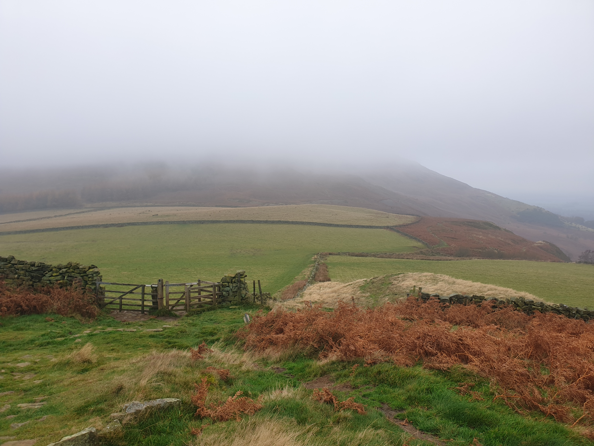
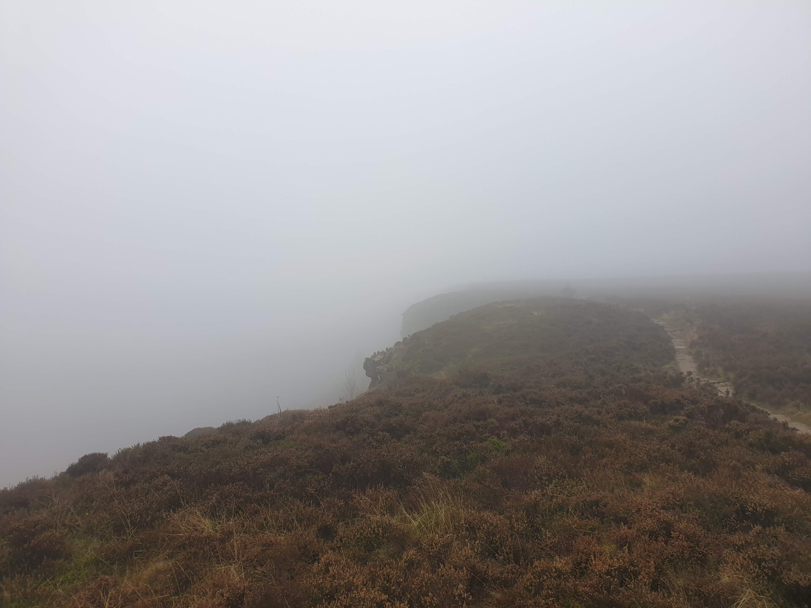
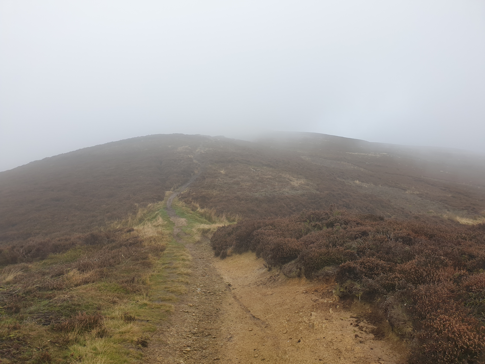
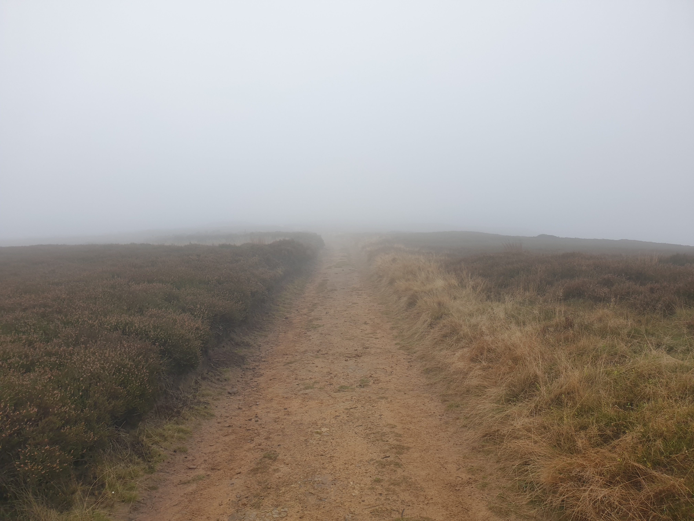
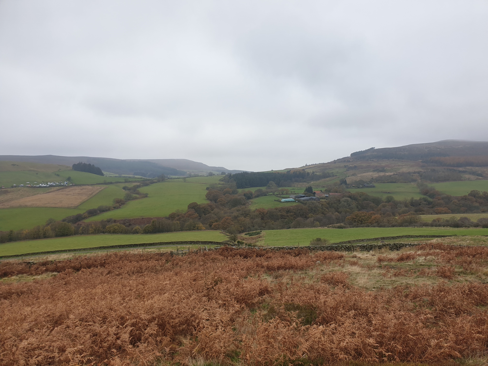
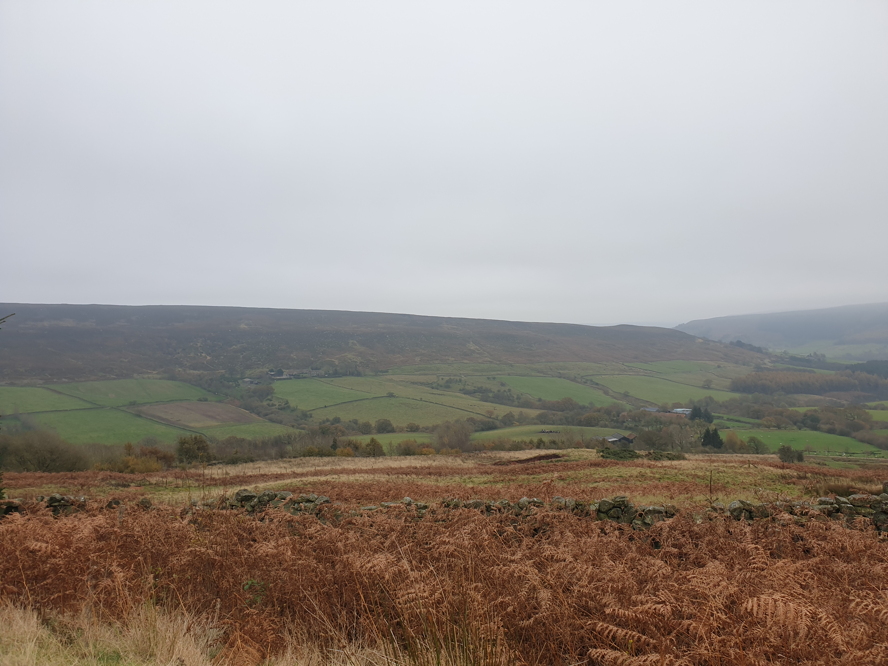
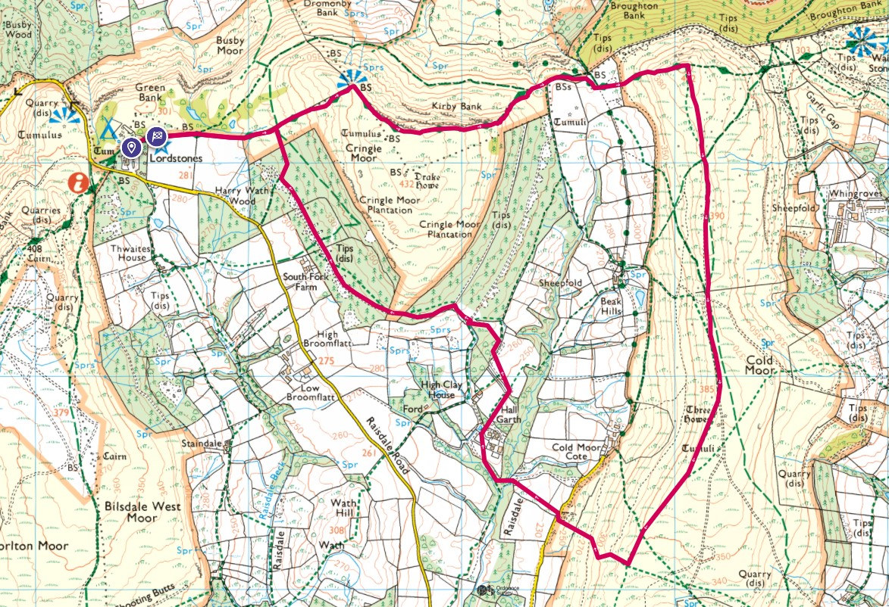

A spare Saturday so I packed up and had a quick drive to Lordstones Country Park.
Setting off on the first path the view was a little foggy...

...and didn't get much better.

At the top it was even foggier.

Took a right turn from the Cleveland Way route and headed along the moors path away from the peaks.

A fairly straight track through the moors, it was at this point I got flashbacks of The Hound of the Baskervilles.

The fog began to clear and as I descended into the valley the view got better.
This picture below is of the route I was planning on taking back to Lordstones, following the treeline up the hill. I often try to pre-empt the map-reading by looking ahead at the view to see where I'm thinking the route will be.

Finding the path down into the valley was a little tricky due to burning.

After possibly using a path to descend into the valley and away from the moors the path was blocked by a barbed wire fence. Nothing a quick bit of climbing could stop.

Passing through a farm I met some locals. Nothing to see here, mooooove along.

Another picture of across the valley to document at a later date which path I found down from the moors.

Then it was just a case of following a track and then a footpath back to the Cleveland Way. This track I'd spotted from another Lordstones peak, hence why I planned this route to check it out.

Finally, before I got back to Tiggy, I checked out the Lordstones just off the main path near the Country Park.

{kind=link}
{kind=link}
{kind=link}
{kind=link}
{kind=link}
{kind=link}
This is the route. The southern-most point of the hike I'm not sure I followed the path as this was where all the burning had happened.
